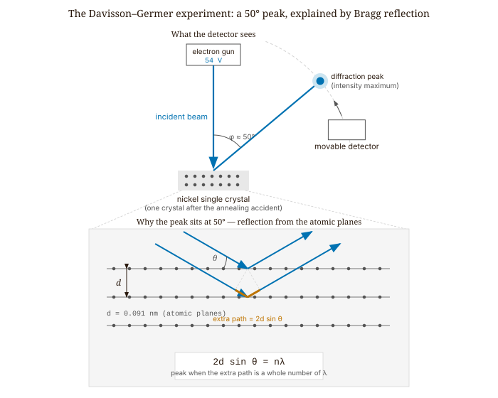
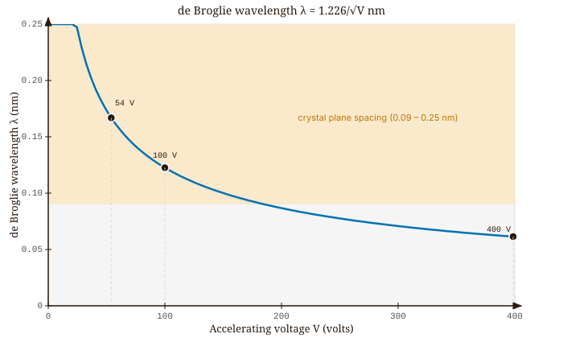
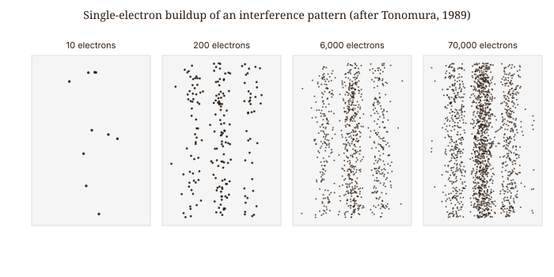
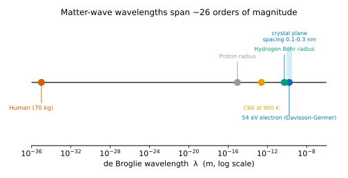

Quantum Mechanics · Volume 1
Chapter 2 — Matter Waves: de Broglie, Davisson–Germer, and the Double Slit
By 1924 it was no longer possible to deny that light — understood for a century as a wave — also arrives in particles, the photons of Chapter 1. Louis-Victor de Broglie, a French physicist finishing his doctoral thesis, asked the natural mirror-image question: if waves can behave like particles, might particles behave like waves? It was a bold symmetry to suggest, and his committee nearly rejected the thesis. Einstein had shown that a light wave of wavelength \(\lambda\) carries momentum \(p = h/\lambda\), with \(h\) Planck’s constant. De Broglie simply read this backwards. A particle carrying momentum \(p\) — for an everyday object, its mass times its velocity — should, he proposed, have a wave associated with it whose wavelength is
\[\lambda = \frac{h}{p}. \tag{2.1}\]
This is the de Broglie wavelength. The relation says that the more momentum a particle carries, the shorter its wavelength — and because \(h\) is so fantastically small (about \(6.6 \times 10^{-34}\) in SI units), the wavelength is imperceptibly tiny for anything heavier than an atom. That smallness is exactly why matter’s wave nature had gone unnoticed for so long.
Einstein, asked by the committee to render a verdict before they would pass the thesis, judged the idea brilliant, and de Broglie received the Nobel Prize in 1929. Confirmation came almost by accident. At Bell Labs in New Jersey, Clinton Davisson and Lester Germer had been firing a beam of electrons at a nickel target and recording how they bounced off — a smooth, featureless spray. Then a glass flask in the vacuum system shattered, air rushed in, and the hot nickel oxidized. To repair the damage they baked the metal at high temperature (annealing it), which had an unintended side effect: the many small crystal grains in the sample fused into a few large single crystals, with atoms lined up in long, regularly spaced rows. When the pair resumed their measurements, the featureless spray was gone. Sharp peaks had taken its place, the electrons now bunching at some angles and shunning others — the unmistakable signature of diffraction. The electrons were behaving as waves scattering off the ordered rows of atoms, exactly as X-rays do, and the wavelength behind the pattern was precisely de Broglie’s \(h/p\). An experiment built for something else entirely had blundered into the discovery that matter is wavelike.

2.1 The de Broglie Wavelength and Its Three Forms
Let us unpack the formula and put it to work. Most particles we deal with move slowly compared with light, so ordinary (non-relativistic) mechanics applies, in which a particle of mass \(m\) and momentum \(p\) has kinetic energy \(K = p^2/2m\) — the energy bound up in its motion. Solving this for the momentum gives \(p = \sqrt{2mK}\), and substituting it into \(\lambda = h/p\) rewrites the wavelength in terms of the particle’s energy:
\[\lambda = \frac{h}{\sqrt{2mK}}. \tag{2.2}\]
In the laboratory we usually control a particle’s energy rather than its momentum directly, and the commonest way to do so is to accelerate a charged particle through a voltage. A particle of charge \(e\) starting from rest and falling through a potential difference \(V\) gains kinetic energy \(K = eV\) — charge times voltage — which gives
\[\lambda = \frac{h}{\sqrt{2meV}}. \tag{2.3}\]
For electrons in particular — a calculation you will do again and again — the mass and charge are fixed numbers, so everything collapses into a convenient rule of thumb:
\[\lambda_{\text{electron}} \approx \frac{1.226\text{ nm}}{\sqrt{V\text{ (in volts)}}}. \tag{2.4}\]
Try it at \(150\) volts: the wavelength comes out near \(0.1\) nm — a tenth of a nanometer, or one ångström. That value is no accident; it is about the spacing between neighboring atoms in a solid. A wave can only diffract from a regular array of obstacles when its wavelength is comparable to their spacing, which is why X-rays, with their ångström-scale wavelengths, diffract from crystals. The de Broglie formula tells us that electrons pushed through a few hundred volts have wavelengths in that very same range. That is why Davisson and Germer could see diffraction at all, and why Bragg’s law — the rule developed for X-rays, which we apply in the next section — carried over to electrons without any change.

It is just as important to be clear about what this wavelength is not. It is not the size of the electron. As far as we can tell the electron is a point particle; even the old “classical electron radius” is about \(2.8 \times 10^{-15}\) m, some five orders of magnitude smaller than the \(0.167\) nm de Broglie wavelength of a \(54\) eV electron. The wavelength describes the electron’s state of motion, not how big it is. This trips up nearly everyone at first, because the tempting mental image — a tiny ball with little ripples clinging to it — is simply wrong. The wave and the particle are not two separable pieces of one object. The wave is the deeper description: between one observation and the next it is the only thing that evolves, and every prediction we can make is read off from it.
| Particle | Mass | Energy or speed | de Broglie wavelength \(\lambda\) |
|---|---|---|---|
| Electron (Davisson–Germer) | \(9.11 \times 10^{-31}\) kg | 54 eV | \(0.167\) nm |
| Proton | \(1.67 \times 10^{-27}\) kg | 54 eV | \(\approx 3.9\) pm |
| \(\text{C}_{60}\) buckyball | \(\approx 1.2 \times 10^{-24}\) kg (720 u) | 900 K beam | \(\approx 2.5\) pm |
| Person walking | 70 kg | 1 m/s | \(\approx 1 \times 10^{-35}\) m |
Table 2.1 — de Broglie wavelengths across twenty-six orders of magnitude. The wavelength shrinks as the momentum grows; for everyday objects it falls so far below any measurable length that the wave nature cannot be detected.
De Broglie’s proposal was a stroke of insight, not a curve fit, and the reasoning behind it is worth seeing. Einstein’s special relativity bundles a particle’s energy and momentum together into a single four-component object — a “four-vector” — that all observers agree on. De Broglie noticed that a wave’s frequency and its wave vector (the spatial frequency \(1/\lambda\), counting wave crests per unit length) bundle together into a four-vector in precisely the same way. For a photon, Einstein’s \(E = h\nu\) links the energy–momentum four-vector to the frequency–wavelength four-vector through the single constant \(h\). De Broglie’s audacious claim was that the same constant links them for every particle, not only for light. It was an argument from symmetry, and the experiments came only afterward to bear it out.
2.2 The Davisson–Germer Experiment: Electron Diffraction and Bragg’s Law
Let us rebuild the 1927 result from scratch and watch how well it holds up. Davisson and Germer accelerated their electrons through \(54\) volts and found a sharp diffraction peak at a scattering angle of \(50°\). The first thing we need is the electron’s wavelength at that energy. Its momentum is:
\[p = \sqrt{2 \times (9.109 \times 10^{-31}) \times (54 \times 1.602 \times 10^{-19})} = 3.970 \times 10^{-24}\text{ kg m s}^{-1} \tag{2.5}\]
\[\lambda = \frac{6.626 \times 10^{-34}}{3.970 \times 10^{-24}} \approx 0.167\text{ nm.} \tag{2.6}\]
Next we need the angle at which a wave this long should diffract. The relevant atomic planes are one particular family of evenly spaced parallel layers of atoms in the crystal, oblique to its surface, separated by \(d = 0.091\) nm — a spacing known independently from X-ray diffraction. Bragg’s law states the condition for waves reflecting off successive planes to reinforce one another: a wave bouncing off the next plane down travels an extra distance \(2d\sin\theta\), where \(\theta\) is measured from the planes, and the reflections add up only when that extra path is a whole number of wavelengths (the lower panel of Figure 2.1 shows the construction). For first-order diffraction (one extra wavelength of path):
\[2d\sin\theta_{\text{Bragg}} = \lambda \implies \sin\theta_{\text{Bragg}} = \frac{0.167}{2 \times 0.091} = 0.918 \implies \theta_{\text{Bragg}} \approx 66.6°. \tag{2.7}\]
Translated into the angle that Davisson and Germer actually measured from the incoming beam, this works out to about \(47°\) — strikingly close to the observed \(50°\). The small remaining gap is not a failure of de Broglie’s idea. It comes from a genuine effect: an electron crossing into the metal feels an attractive pull from the crystal as a whole — an “inner potential” — that speeds it up a little and so shortens its wavelength once inside. Allowing for that correction brings prediction and measurement into exact agreement.
This is what a successful quantitative test looks like: a parameter-free prediction built from quantities measured entirely independently (\(h\), \(m_e\), \(d\)), compared against an angle measured in an unrelated experiment that was not even designed to test the prediction. The agreement is not approximate. It is exact once the physics is fully accounted for.
Davisson and Germer did not at first fully understand what they had found. Davisson grasped it only after traveling to Europe and speaking with Max Born, James Franck, and others who had been absorbing de Broglie’s and Schrödinger’s new wave mechanics. Meanwhile George Paget Thomson was doing similar experiments independently in Aberdeen, firing electrons through thin metal films and observing rings — Debye–Scherrer diffraction, the same geometry used for polycrystalline X-ray diffraction. Thomson and Davisson shared the 1937 Nobel Prize. (Davisson–Germer, Physical Review 30, 705–740 (1927). doi:10.1103/PhysRev.30.705)
One point of logic should be made explicit. The Davisson–Germer experiment does not prove that electrons are waves in any classical sense — that they are extended oscillations in a medium, the way sound is. What it proves is that electrons produce interference and diffraction that can only be calculated using wave mechanics. The distinction matters because the very same electron that contributes to a diffraction peak arrives at the detector as a localized event: a single click, a single dot.
2.3 Single-Electron Interference and the Double Slit
Akira Tonomura and colleagues at Hitachi performed a particularly instructive version of the double-slit experiment in 1989. They used an electron biprism — a fine wire held at positive potential that splits an electron beam into two coherent paths, physically equivalent to two slits — and reduced the beam intensity until fewer than one electron was in the apparatus at any moment. Each electron was recorded as a single localized dot on a position-sensitive detector.
The accumulated pattern builds in a characteristic way. At ten electrons, the dots appear randomly distributed, with no evident order. By two hundred electrons, faint clustering appears. By six thousand, stripes begin to form. By seventy thousand, the result is a clear interference pattern of alternating bright and dark fringes — the pattern that wave mechanics predicts when a wave passes through both paths.
Each electron in this experiment arrived as a particle — a single localized dot — and was detected individually. Yet the distribution of those dots, after many electrons, matches the interference pattern \(|\psi|^2\) computed from the wave function for a wave that passed through both paths. The electrons did not interfere with each other; there was only ever one in the apparatus at a time. Each electron’s wave function explored both arms simultaneously and interfered with itself. The dot on the detector marks where the wave function collapsed upon measurement.
Tonomura’s 1989 paper is the most famous experiment of this kind, but it was not the first. Pier Giorgio Merli, Giulio Missiroli, and Gianfranco Pozzi demonstrated single-electron buildup in Bologna in 1974 (published in 1976 in the American Journal of Physics), and a 2002 Physics World poll voted their experiment one of the most beautiful in physics. The first version to use genuine nano-fabricated double slits — real slits cut into a membrane rather than a biprism — came later, with Bach et al. in 2013. (Tonomura et al., Am. J. Phys. 57, 117–120 (1989). doi:10.1119/1.16104; Bach et al., New J. Phys. 15, 033018 (2013). doi:10.1088/1367-2630/15/3/033018)

The experiment rules out any model in which the electron follows a definite trajectory through one slit or the other. If electrons had definite trajectories, reducing the beam to one electron at a time would not change the outcome — you would see two bright regions, one behind each slit, with no fringes between them. Instead, fringes appear well into the geometric shadow, and the pattern depends on the separation of both slits even though each electron can only be detected in one place.
One might propose that the electron goes through one slit but is disturbed by the act of not detecting it at the other. This is not supported by experiment. The slits can be made arbitrarily wide and the detection system arbitrarily gentle, and the interference persists as long as information about which slit the electron used is not acquired. What destroys interference is not physical disturbance — it is information.
2.4 Why Macroscopic Objects Do Not Diffract: The Classical Limit
The de Broglie relation applies to all objects with momentum, not only to quantum particles. The relevant question is whether the associated wavelength is large enough to produce observable interference.
A proton accelerated through the same 54 V has 1836 times the electron’s mass. At the same kinetic energy its momentum is \(\sqrt{1836}\) times larger, so its wavelength is \(\sqrt{1836} \approx 43\) times smaller: about 4 pm. That is still within reach of crystal diffraction — neutron and proton diffraction are real techniques used in materials science.
A \(\text{C}_{60}\) buckyball — sixty carbon atoms, mass roughly 720 atomic mass units — was diffracted from a grating with 50 nm slits by Anton Zeilinger’s group in Vienna in 1999. The de Broglie wavelength at the effusion temperature of 900 K works out to roughly 2.5 pm (picometers), smaller than the molecule itself. Yet fringes appeared. The 2019 experiments by Fein and colleagues pushed this to molecules of approximately 2,000 atoms. (Arndt et al., Nature 401, 680–682 (1999). doi:10.1038/44348; Fein et al., Nat. Phys. 15, 1242–1245 (2019). doi:10.1038/s41567-019-0663-9)
Now compute the wavelength of a 70 kg person walking at 1 m/s:
\[\lambda = \frac{6.626 \times 10^{-34}}{70 \times 1} \approx 10^{-35}\text{ m.} \tag{2.8}\]
That is approximately twenty orders of magnitude smaller than a proton radius. No physical slit, crystal lattice, or instrument could resolve a wavelength this small. Quantum interference is not absent for large objects — it is present but completely undetectable. Quantum mechanics is not wrong at human scales; the wavelengths are simply too small for any realizable grating or aperture to reveal the fringe structure. This is Bohr’s correspondence principle made quantitative: quantum mechanics contains classical mechanics as the limit in which the system’s action greatly exceeds \(\hbar\). The de Broglie wavelength makes that limit concrete — computing \(h/p\) is sufficient.

2.5 Introducing the Wave Function: Born’s Rule and the Road to Uncertainty
De Broglie established that there is a wave associated with a moving particle, but did not say what the wave represents. That question was answered by Max Born in 1926. Born proposed that the wave function \(\psi(x,t)\) is not a physical wave in space, like a water wave or a sound wave. Its square modulus, \(|\psi(x,t)|^2\), is a probability density: the probability per unit length of finding the particle at position \(x\) at time \(t\).
This interpretation is not derivable from the de Broglie relation. It is a separate postulate, and it is the one that makes quantum mechanics quantitatively predictive. The wave function is complex-valued and not directly observable, but it predicts observable interference phenomena.
The Tonomura experiment illustrates Born’s rule. The interference pattern that accumulates, dot by dot, matches the pattern \(|\psi|^2\) predicts from the wave equation. Individual dots appear at random positions — no single electron’s landing point can be predicted. After many electrons, the distribution converges to \(|\psi|^2\). This randomness is not, as far as we know, the result of ignorance about some underlying hidden variables. It is a fundamental feature of the theory.
The link between the de Broglie wavelength and the wave function is exact, not just a loose analogy. A state of perfectly definite momentum \(p\) corresponds to a plane wave — an endlessly repeating wave of constant wavelength — written \(\psi(x) \propto e^{ipx/\hbar}\), where \(\hbar = h/2\pi\). Its spatial period is \(\lambda = h/p = 2\pi\hbar/p\), precisely de Broglie’s wavelength, now reappearing as the repeat length of the quantum state itself. Chapter 3 pins down what the wave function means, how it is normalized, and why \(|\psi|^2\) gives probabilities, and supplies its equation of motion.
One consequence is worth flagging before we move on. A state of definite momentum is spread over all of space — a plane wave \(e^{ipx/\hbar}\) marches on forever with no particular location. To describe a particle that is somewhere in particular, we must add together plane waves spanning a range of momenta \(\Delta p\); the more momenta we mix in, the more sharply the bundle can be localized, down to a width \(\Delta x \sim h/\Delta p\). This trade-off is a general fact about waves — it comes from Fourier analysis, the mathematics of building any shape out of pure waves — and in the next chapter it hardens into the Heisenberg uncertainty principle: the more tightly you pin a particle’s position, the more its momentum must spread.
Looking Ahead
The next chapter, Chapter 3 — The Wave Function and the Schrödinger Equation, says what the matter wave actually is: a complex probability amplitude, read through Born’s rule, and governed by an equation of motion that carries it forward in time.
Interactive Simulations
These companion simulations run in the browser and accompany this chapter online.
- de Broglie wavelength — pick a particle and its energy; compute λ = h/p and place it on a logarithmic length-scale ruler.
- Bragg diffraction — set accelerating voltage and crystal-plane spacing; see the 1st/2nd/3rd Bragg reflection orders and their angles.
- Electron interference — fire electrons one at a time and watch the interference fringes build up from single dots.
Exercises
Warm-up
-
Difficulty: Warm-up — tests command of the formula and unit conversions. State de Broglie’s hypothesis in one sentence. Then write \(\lambda\) in terms of (a) momentum \(p\), (b) kinetic energy \(K\) for a particle of mass \(m\), and © accelerating voltage \(V\) for a particle of charge \(e\) and mass \(m\). Finally, use the electron shortcut \(\lambda \approx 1.226/\sqrt{V}\) nm to compute \(\lambda\) at \(V = 54\) V, \(V = 100\) V, and \(V = 400\) V. Tests: command of the three forms of the de Broglie relation and ability to apply the electron shortcut correctly.
-
Difficulty: Warm-up — tests understanding of what the wavelength is and is not. A 54 eV electron has de Broglie wavelength \(\lambda \approx 0.167\) nm. The classical electron radius is \(r_e \approx 2.8 \times 10^{-15}\) m. By how many orders of magnitude does \(\lambda\) exceed \(r_e\)? What does this tell you about the relationship between the electron’s physical size and its wave behavior? Tests: whether the student grasps that wavelength is a property of the state of motion, not the physical particle.
-
Difficulty: Warm-up — tests qualitative grasp of the classical limit. Compute the de Broglie wavelength of a 70 kg person walking at 1 m/s and of a proton (\(m_p = 1.673 \times 10^{-27}\) kg) moving at \(10^5\) m/s. Express each in meters and then as a fraction of a proton radius (\(\sim 10^{-15}\) m). Why is quantum interference unobservable for the person but not for the proton? Tests: ability to apply \(\lambda = h/p\) to macroscopic and nuclear-scale objects and to articulate the correspondence principle.
Application
-
Difficulty: Application — tests Bragg’s law as used in Davisson–Germer. Reconstruct the Davisson–Germer result quantitatively. Electrons are accelerated through 54 V and scatter from a family of atomic planes in nickel with spacing \(d = 0.091\) nm. (a) Compute \(\lambda\) from the de Broglie relation. (b) Apply Bragg’s law (\(2d\sin\theta = n\lambda\), \(n = 1\)) to find the Bragg angle \(\theta_{\text{Bragg}}\). © The observed peak in the Davisson–Germer geometry is near 50°. Identify one physical reason the calculated angle may differ slightly from the observed angle. Tests: full quantitative execution of the Davisson–Germer argument, including awareness of the inner-potential correction.
-
Difficulty: Application — extends de Broglie to neutrons and materials science. A thermal neutron has kinetic energy \(K \approx k_B T\) at room temperature (\(T = 293\) K, \(k_B = 1.38 \times 10^{-23}\) J/K, \(m_n = 1.675 \times 10^{-27}\) kg). (a) Compute \(\lambda\) for a thermal neutron. (b) How does this compare to the Davisson–Germer electron wavelength and to typical crystal plane spacings (0.1–0.3 nm)? © Neutron diffraction can locate hydrogen atoms in protein crystals where X-ray diffraction struggles. Give a physical reason why neutrons are better suited to this task. Tests: facility with the de Broglie formula for a different particle, and connection to real experimental technique.
-
Difficulty: Application — quantifies the molecular diffraction frontier. The \(\text{C}_{60}\) buckyball has mass \(\approx 720\) amu (\(1\text{ amu} = 1.66 \times 10^{-27}\) kg). Zeilinger’s group effused buckyballs from an oven at \(T \approx 900\) K. Estimate the most probable speed using \(\frac{1}{2}mv^2 = \frac{3}{2}k_BT\) and compute \(\lambda\). Compare \(\lambda\) to the 50 nm slit spacing used in the experiment. Does the smallness of \(\lambda\) relative to the slit surprise you? What does it tell you about the sensitivity of the detection technique required? Tests: de Broglie calculation for a mesoscopic object, and intuition about why large-molecule diffraction is experimentally demanding.
Synthesis
-
Difficulty: Synthesis — connects Born’s rule to the Tonomura buildup. Tonomura’s experiment records electrons one at a time, each as a single dot. (a) If electrons followed definite classical trajectories through one slit or the other, what pattern would accumulate on the detector? Draw or describe it. (b) The actual pattern is an interference fringe. What does this imply about each electron’s wave function as it traverses the apparatus? © A student argues: “Maybe the electrons interact with the metal walls of the biprism and get deflected into fringes — no wave function needed.” Design a modification of the experiment that would rule this out. Tests: ability to reason from the experimental result back to wave function structure, and to construct falsifying arguments.
-
Difficulty: Synthesis — unifies de Broglie and Heisenberg via Fourier. A particle with perfectly definite momentum \(p\) has wave function \(\psi(x) \propto e^{ipx/\hbar}\) — a plane wave extending over all space. (a) What is \(\Delta x\) (the spatial uncertainty) for this state? What is \(\Delta p\)? (b) Now suppose you superpose plane waves over a momentum range \(\Delta p\) centered on \(p_0\). Argue qualitatively, using the Fourier relationship between a wave packet’s width and its frequency content, that the resulting spatial width satisfies \(\Delta x \sim h/\Delta p\). © Identify the chapter’s statement that anticipates this result without yet calling it the uncertainty principle. Tests: whether the student can connect the de Broglie wavelength to the uncertainty principle through the logic of wave superposition.
Challenge
- Difficulty: Challenge — requires combining Bragg geometry with relativistic correction. A modern 200 kV transmission electron microscope accelerates electrons through \(2.0 \times 10^5\) V. (a) Compute \(\lambda\) using the non-relativistic formula. (b) The relativistic momentum is \(p = \sqrt{(K/c)^2 + 2m_eK}\) where \(c = 3.0 \times 10^8\) m/s. Compute the relativistic \(\lambda\). © By what percentage does the relativistic correction change \(\lambda\)? (d) In a TEM, the electron wavelength determines the minimum resolvable feature size (Rayleigh criterion). If the non-relativistic wavelength were used to set the microscope’s resolution specification, how would the specification be in error? Tests: ability to apply the relativistic formula, quantify its importance, and connect wavelength to instrument resolution.
References
de Broglie, L. (1924). Recherches sur la théorie des quanta. Doctoral thesis, Université de Paris. Published as Annales de Physique, 3 (1925), 22–128.
Davisson, C., & Germer, L. H. (1927). Diffraction of electrons by a crystal of nickel. Physical Review, 30(6), 705–741. doi:10.1103/PhysRev.30.705
Tonomura, A., Endo, J., Matsuda, T., Kawasaki, T., & Ezawa, H. (1989). Demonstration of single-electron buildup of an interference pattern. American Journal of Physics, 57(2), 117–120. doi:10.1119/1.16104
Merli, P. G., Missiroli, G. F., & Pozzi, G. (1976). On the statistical aspect of electron interference phenomena. American Journal of Physics, 44(3), 306–307.
Bach, R., Pope, D., Liou, S.-H., & Batelaan, H. (2013). Controlled double-slit electron diffraction. New Journal of Physics, 15, 033018. doi:10.1088/1367-2630/15/3/033018
Arndt, M., Nairz, O., Vos-Andreae, J., Keller, C., van der Zouw, G., & Zeilinger, A. (1999). Wave–particle duality of C₆₀ molecules. Nature, 401, 680–682. doi:10.1038/44348
Fein, Y. Y., Geyer, P., Zwick, P., Kiałka, F., Pedalino, S., Mayor, M., Gerlich, S., & Arndt, M. (2019). Quantum superposition of molecules beyond 25 kDa. Nature Physics, 15, 1242–1245. doi:10.1038/s41567-019-0663-9
Townsend, J. S. (2012). A Modern Approach to Quantum Mechanics (2nd ed.). University Science Books.
Griffiths, D. J., & Schroeter, D. F. (2018). Introduction to Quantum Mechanics (3rd ed.). Cambridge University Press.